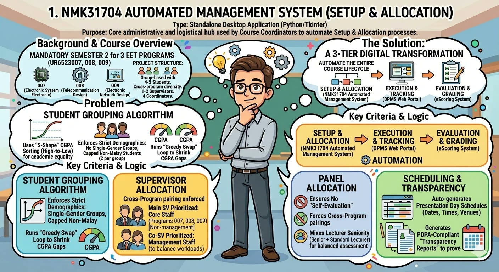
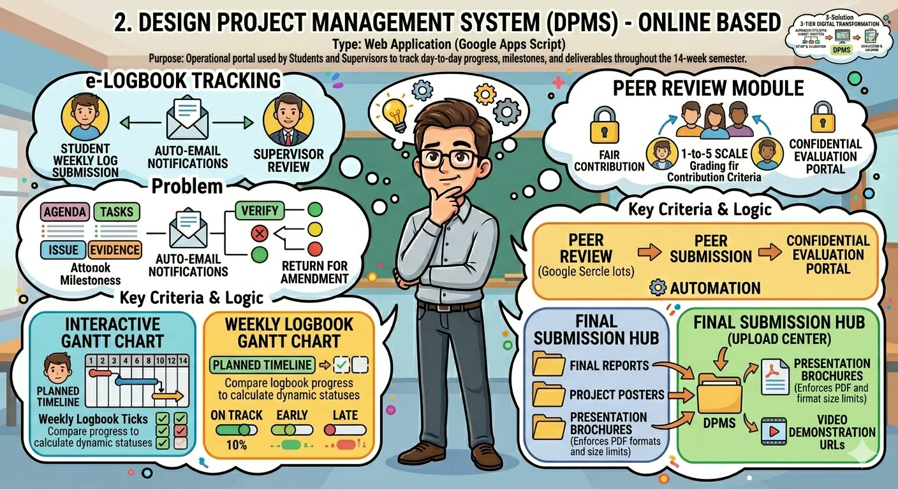
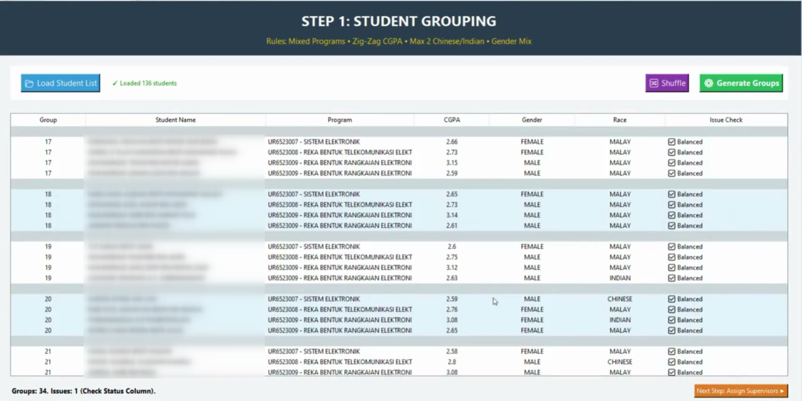
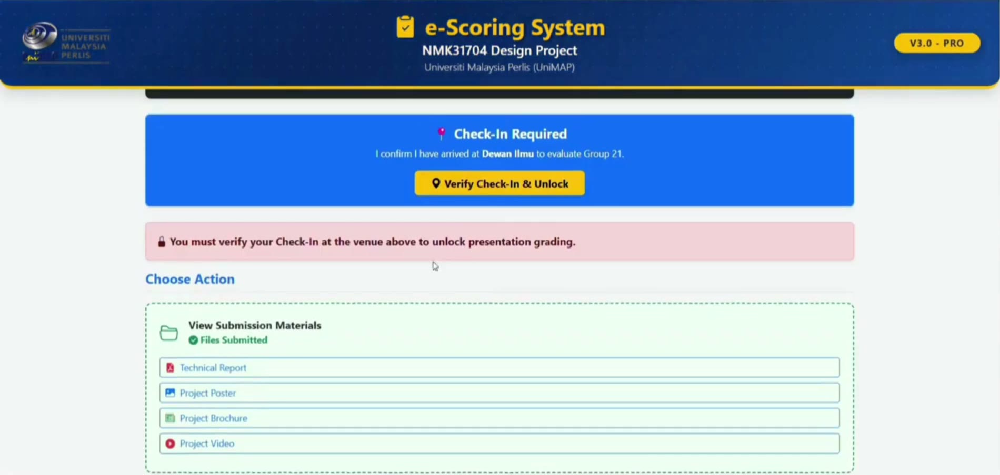
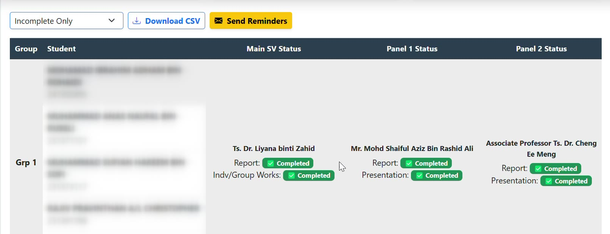
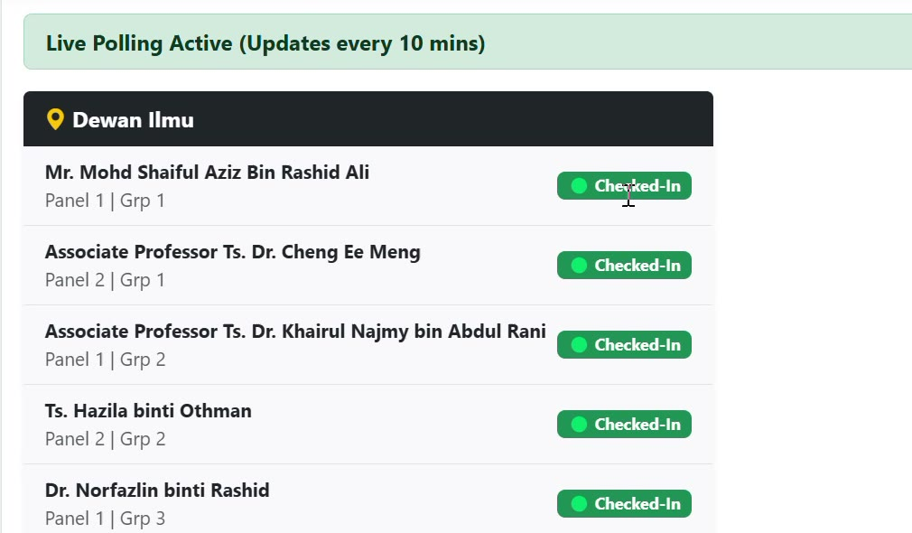

The problem
For two semesters, all of it was manual

- Grouping: student records sorted by hand, then checked again for every rule
- Logbook: written in MS Word, saved as PDF, signed by the supervisor, submitted in eLearning
- Peer review: Google Form, then manual queries in Google Sheets to filter and sort each student's scores
- Assessment: a Google Sheet made to look like a system. One sheet per group, so supervisor and panels could see each other's marks, and every panel change was edited by hand
- Final materials: each group sent its report, poster and video to its panels by email and eLearning
The innovation
One ecosystem, three systems, at a glance



System 1 · Set up
Balanced groups and fair allocation in minutes


Rules the system enforces
- Every group mixes the three programmes
- CGPA, gender and race balanced across groups
- Supervisor and co-supervisor from different programmes
- Management staff assigned as co-supervisor
- No panel evaluates a group they supervise
How it works
Students are ordered by CGPA and dealt into groups in a zig-zag. The system then swaps students between groups until the gaps are small, and reports how the allocation was made.
System 2 · Run
DPMS: one place for the whole 14 weeks

- Weekly logbook filled in on the web, with photos as evidence
- Gantt chart planned once, then ticked through the logbook each week
- Supervisor verification on screen, with email notification
- Peer review confidential, with marks calculated by the system
- Final submission of report, poster, brochure and video link
- Coordinators mark logbooks inside the same system

System 3 · Assess
eScoring: mark on the spot, track it live





Recognition
Gold Award, EDIC 2026

Gold Award
Education Innovation Challenge (EDIC) 2026
International Conference on Quality, Sustainability & Innovation in Science and Technology Education (IQ-SITE 2026)
CategoryTransformative Teaching
Date1 September 2026
TeamMohd Zamri Zahir Ahmad, Ahmad Ashraf Abdul Halim, Nurol Husna Che Rose, Aini Syuhada Md Zain
Thank you
Questions and discussion

The team
Ts. Dr. Mohd Zamri Zahir Ahmad · Ts. Dr. Ahmad Ashraf Abdul Halim
Ts. Dr. Aini Syuhada Md Zain · Dr. Nurol Husna Che Rose
Next: the three systems become one unified DPMS for Semester 2, 2026/2027.